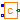
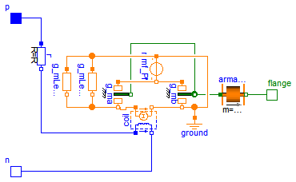
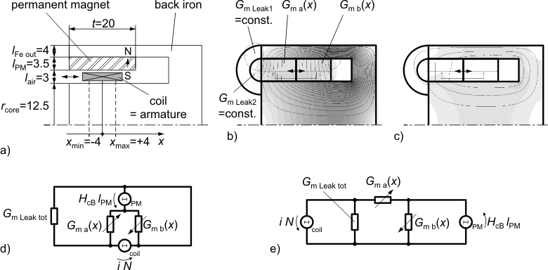
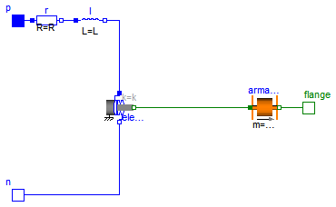

| Name | Description |
|---|---|
| Detailed actuator model for rough magnetic design of actuator and system simulation | |
|  ConstantActuator | Simple behavioural actuator model for system simulation |

In the ConstantActuator model the force F is strictly proportional to the current i as indicated by the converter constant c. However, there is an additional non-linear force component in such an actuator that is due to the dependency of the coil inductance L on the armature position x. The inductance increases as the armature moves into the stator. The total force is
1 2 dL
F = - i -- + c i
2 dx
Both force components are properly considered with a simple permeance model as shown in the figures below. Figure (a) illustrates the dimensions of the axisymmetric moving coil actuator that are needed in the permeance model. Figure (b) shows partitioning into flux tubes and the permanent magnetic field without current. G_ma and G_mb both are the permeances resulting from a series connection of the permaent magnet and air gap sections. The field plot of the coil-imposed mmf is shown in figure (c) without the permanent magnetic mmf (H_cB=0). The placement of the magnetic network components in figure (d) retains the geometric structure of the actuator. In figure (e), the permeance model is restructured and thus simplified.

| Type | Name | Default | Description |
|---|---|---|---|
| Real | N | 140 | Number of turns |
| Resistance | R | 2.86 | Coil resistance [Ohm] |
| Radius | r_core | 12.5e-3 | Radius of ferromagnetic stator core [m] |
| Length | l_PM | 3.5e-3 | Radial thickness of permanent magnet ring [m] |
| Length | t | 0.02 | Axial length of permanent magnet ring and air gap respectively [m] |
| Length | l_air | 3e-3 | Total radial length of armature air gap [m] |
| Length | l_FeOut | 4e-3 | Radial thickness of outer back iron (for estimation of leakage permeance) [m] |
 | |||
| Material | |||
| BaseData | material | Modelica.Magnetic.FluxTubes.... | Ferromagnetic material characteristics |
| Armature and stopper | |||
| Mass | m_a | 0.012 | Mass of armature [kg] |
| TranslationalSpringConstant | c | 1e11 | Spring stiffness between impact partners [N/m] |
| TranslationalDampingConstant | d | 400 | Damping coefficient between impact partners [N.s/m] |
| Position | x_min | -4e-3 | Position of stopper at minimum armature position [m] |
| Position | x_max | 4e-3 | Position of stopper at maximum armature position [m] |
| Type | Name | Description |
|---|---|---|
| PositivePin | p | Electrical connector |
| NegativePin | n | Electrical connector |
| Flange_b | flange | Flange of component |
model PermeanceActuator
"Detailed actuator model for rough magnetic design of actuator and system simulation"
parameter Real N = 140 "Number of turns";
parameter SI.Resistance R = 2.86 "Coil resistance";
parameter SI.Radius r_core = 12.5e-3 "Radius of ferromagnetic stator core";
parameter SI.Length l_PM = 3.5e-3 "Radial thickness of permanent magnet ring";
parameter SI.Length t = 0.02
"Axial length of permanent magnet ring and air gap respectively";
parameter SI.Length l_air = 3e-3 "Total radial length of armature air gap";
parameter SI.Length l_FeOut = 4e-3
"Radial thickness of outer back iron (for estimation of leakage permeance)";
parameter Modelica.Magnetic.FluxTubes.Material.HardMagnetic.BaseData
material=
Modelica.Magnetic.FluxTubes.Material.HardMagnetic.BaseData()
"Ferromagnetic material characteristics";
parameter SI.Mass m_a = 0.012 "Mass of armature";
parameter SI.TranslationalSpringConstant c=
1e11 "Spring stiffness between impact partners";
parameter SI.TranslationalDampingConstant d=
400 "Damping coefficient between impact partners";
parameter SI.Position x_min=-4e-3
"Position of stopper at minimum armature position";
parameter SI.Position x_max=4e-3
"Position of stopper at maximum armature position";
SI.Position x(start = x_min, stateSelect=StateSelect.prefer)
"Armature position, alias for flange position";
SI.Inductance L "Coil inductance";
Modelica.Magnetic.FluxTubes.Sources.ConstantMagneticPotentialDifference
mmf_PM(
final V_m=material.H_cB*l_PM) "Permanent magnet's magnetomotive force";
Modelica.Magnetic.FluxTubes.Examples.Utilities.TranslatoryArmatureAndStopper
armature(
final L=0,
final m=m_a,
final c=c,
final d=d,
n=2,
final x_max=x_max,
final x_min=x_min)
"Inertia of moving coil + coil carrier; stoppers at end of stroke range";
Modelica.Electrical.Analog.Basic.Resistor r(final R=R);
Basic.Ground ground;
Modelica.Magnetic.FluxTubes.Basic.ElectroMagneticConverter coil(
final N=N);
Modelica.Magnetic.FluxTubes.Shapes.Force.HollowCylinderRadialFlux
g_ma(
final dlBydx=1,
final l=t/2 + x,
final r_i=r_core,
final r_o=r_core + l_air + l_PM,
final mu_r=1.05,
final useSupport=false);
Modelica.Magnetic.FluxTubes.Shapes.Force.HollowCylinderRadialFlux
g_mb(
final r_i=r_core,
final r_o=r_core + l_air + l_PM,
final dlBydx=-1,
final l=t/2 - x,
final mu_r=1.05,
final useSupport=false);
Modelica.Magnetic.FluxTubes.Shapes.Leakage.CoaxCylindersEndFaces
g_mLeak1(
final r_1=r_core + l_air + l_PM,
final r_2=r_core + l_air + l_PM + l_FeOut,
final r_0=r_core)
"Leakgage between coaxial end planes of ferromagnetic stator core and outer back iron";
Modelica.Magnetic.FluxTubes.Shapes.Leakage.HalfCylinder g_mLeak2(
final l=2*pi*(r_core + (l_air + l_PM)/2))
"Leakgage between edges of ferromagnetic stator core and outer back iron";
Modelica.Electrical.Analog.Interfaces.PositivePin p "Electrical connector";
Modelica.Electrical.Analog.Interfaces.NegativePin n "Electrical connector";
Modelica.Mechanics.Translational.Interfaces.Flange_b flange
"Flange of component";
equation
x = flange.s;
L = coil.N^2 * (g_ma.G_m + g_mLeak1.G_m + g_mLeak2.G_m);
connect(armature.flange_b, flange);
connect(r.p, p);
connect(armature.flange_a,g_mb. flange);
connect(g_mb.flange,g_ma. flange);
connect(g_mLeak1.port_n, g_ma.port_n);
connect(g_mLeak2.port_n, g_ma.port_n);
connect(g_ma.port_n, coil.port_p);
connect(coil.port_n, g_mb.port_n);
connect(g_mb.port_n, mmf_PM.port_p);
connect(mmf_PM.port_p, g_mLeak2.port_p);
connect(mmf_PM.port_p, g_mLeak1.port_p);
connect(g_ma.port_p, mmf_PM.port_n);
connect(mmf_PM.port_n, g_mb.port_p);
connect(r.n, coil.p);
connect(coil.n, n);
connect(ground.port, g_mb.port_n);
end PermeanceActuator;

Similar to rotational DC-Motors, the electro-mechanical energy conversion of translatory electrodynamic actuators and generators of moving coil and moving magnet type can be described with the following two converter equations:
F = c * i
V_i = c * v
with electrodynamic or Lorentz force F, converter constant c, current i, induced back-emf V_i and armature velocity v. The model is very similar to the well-known behavioural model of a rotational one-phase DC-Machine, except that it is for translatory motion. For a moving coil actuator with a coil inside an air gap with flux density B and a total wire length l inside the magnetic field, the converter constant becomes
c = B * l.
The converter constant c as well as coil resistance R and inductance L are assumed to be known, e.g., from measurements or catalogue data. Hence this model is well-suited for system simulation together with neighbouring subsystems, but not for actuator design, where the motor constant is to be found on base of the magnetic circuit's geometry, material properties and winding data. See PermeanceActuator for a more accurate model of this actuator that is based on a magnetic network. Due to identical connectors, both models can be used in system simulation, e.g. to simulate a stroke as demonstrated in ArmatureStroke.
| Type | Name | Default | Description |
|---|---|---|---|
| ElectricalForceConstant | k | 3.88 | Converter constant [N/A] |
| Resistance | R | 2.86 | Coil resistance [Ohm] |
| Inductance | L | 0.0051 | Coil inductance at mid-stroke [H] |
| Armature and stopper | |||
| Mass | m_a | 0.012 | Armature mass [kg] |
| TranslationalSpringConstant | c | 1e11 | Spring stiffness between impact partners [N/m] |
| TranslationalDampingConstant | d | 400 | Damping coefficient between impact partners [N.s/m] |
| Position | x_min | -4e-3 | Minimum armature position [m] |
| Position | x_max | 4e-3 | Maximum armature position [m] |
| Type | Name | Description |
|---|---|---|
| PositivePin | p | Electrical connector |
| NegativePin | n | Electrical connector |
| Flange_b | flange | Flange of component |
model ConstantActuator
"Simple behavioural actuator model for system simulation"
parameter SI.ElectricalForceConstant k = 3.88 "Converter constant";
parameter SI.Resistance R = 2.86 "Coil resistance";
parameter SI.Inductance L = 0.0051 "Coil inductance at mid-stroke";
parameter SI.Mass m_a = 0.012 "Armature mass";
parameter Modelica.SIunits.TranslationalSpringConstant c=
1e11 "Spring stiffness between impact partners";
parameter Modelica.SIunits.TranslationalDampingConstant d=
400 "Damping coefficient between impact partners";
parameter SI.Position x_min = -4e-3 "Minimum armature position";
parameter SI.Position x_max = 4e-3 "Maximum armature position";
SI.Position x(start=x_min, stateSelect=StateSelect.prefer)
"Armature position, alias for flange position";
Modelica.Electrical.Analog.Basic.Resistor r(final R=R) "Coil resistance";
Modelica.Magnetic.FluxTubes.Examples.Utilities.TranslatoryArmatureAndStopper
armature(
final m=m_a,
final x_max=x_max,
final x_min=x_min,
final L=0,
final c=c,
final d=d,
n=2) "Armature inertia with stoppers at end of stroke range";
Modelica.Electrical.Analog.Basic.Inductor l(final L=L) "Coil inductance";
Modelica.Electrical.Analog.Basic.TranslationalEMF
electroTranslationalConverter( final k=k);
Modelica.Electrical.Analog.Interfaces.PositivePin p "Electrical connector";
Modelica.Electrical.Analog.Interfaces.NegativePin n "Electrical connector";
Modelica.Mechanics.Translational.Interfaces.Flange_b flange
"Flange of component";
equation
flange.s = x;
connect(r.p, p);
connect(l.p,r. n);
connect(armature.flange_b, flange);
connect(l.n, electroTranslationalConverter.p);
connect(n, electroTranslationalConverter.n);
connect(electroTranslationalConverter.flange, armature.flange_a);
end ConstantActuator;